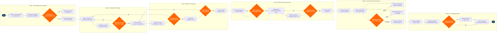

| Step | L4 Step Name | KPI / Target | Pain Point / Risk | Gate |
|---|---|---|---|---|
| 1.1 | Extract revenue shortfall signals by route | Routes identified with load factor <75% at 60-day departure horizon | NRM O&D data aggregation latency of 24 hrs can mask intra-day demand shifts on thin routes | |
| 1.2 | Benchmark competitor promotional fares | Competitor fare monitoring coverage ≥95% of target markets | ATPCO feed refresh lag up to 4 hours means recently filed competitor promos may be missed | |
| 1.3 | Validate demand gap and competitive case | Decision cycle time <2 business days from trigger | Demand elasticity coefficients in SkyCAST may not reflect post-COVID traveller behaviour shifts | ⚠ |
| 2.1 | Define target markets and travel windows | Scope document completed within 1 business day of approval | Point-to-point booking data cannot quantify connecting-itinerary stimulus for carriers with hub overlap | |
| 2.2 | Model promotional fare levels and AP rules | Modelled incremental revenue uplift ≥8% over base forecast | PROS RM fare optimisation models require minimum 18 months booking history; thin routes yield unreliable elasticity estimates | |
| 2.3 | Simulate revenue and load factor impact | Projected system load factor ≥83%; projected RASM ≥ current period RASM | SkySYM scenario runs do not model real-time competitor reaction; simulation may overstate incremental demand | ⚠ |
| 2.4 | Draft detailed fare rules and blackout dates | Fare rule completeness: all ATPCO mandatory categories populated before submission | Manual blackout date entry is error-prone; misaligned peak dates cause revenue leakage during holidays | |
| 3.1 | Submit fare package to Pricing Committee | Submission to decision cycle ≤3 business days | Committee quorum requirements can delay approval by 3–5 days during peak planning seasons | ⚠ |
| 3.2 | Conduct DOT advertising compliance review | 100% of promotional fares reviewed against DOT 14 CFR Part 399 before publication | DOT rules require all fees to be disclosed in advertised price; dynamic ancillary bundles create disclosure complexity | ⚠ |
| 3.3 | Issue formal fare design approval record | Approval record issued within 1 business day of final compliance clearance | Audit trail stored in disconnected email systems; no integrated workflow between legal review and pricing execution tools | |
| 4.1 | File promotional fare records in ATPCO | Filing-to-distribution latency <4 hours; ATPCO error-free submission rate ≥99.5% | ATPCO Category 25 (fare by rule) errors are common when promotional fares inherit base fare conditions incorrectly | ⚠ |
| 4.2 | Verify fare pickup in all GDS channels | GDS pickup verified within 6 hours of ATPCO filing; parity across all 3 GDS ≥99% | Travelport fare pickup latency can exceed Sabre by 2+ hours; delayed availability causes agent-quoted fare mismatches | ⚠ |
| 4.3 | Publish fare via NDC API Gateway and direct.com | Direct channel price parity with GDS ≥99.9%; NDC offer publication latency <2 hours | NDC offer schema versioning between airline and OTA partners frequently causes display errors for complex rule fares | ⚠ |
| 5.1 | Activate promotional fare and initiate sale | Sale activation within 30 minutes of planned launch time; zero mismatch between advertised and bookable fare | Altéa inventory class configuration must align with ATPCO filed booking codes; manual misalignment causes zero-sell errors | |
| 5.2 | Monitor booking pace and load factor daily | Daily booking pace within ±15% of forecast; load factor trajectory toward ≥83% at departure | NRM bid price recalculation triggered by promo booking surge can inadvertently close higher-yield inventory on peak flights | ⚠ |
| 5.3 | Adjust inventory caps based on pace signal | Intervention decision time <4 hours from pace alert; yield dilution contained to <3% of base fare RASM | Real-time cap adjustments in NRM can conflict with GDS cached availability, creating over-sell risk on thin-gauge aircraft | |
| 6.1 | Pull post-campaign revenue and yield report | Report generated within 5 business days of sale close; variance from projection documented | Attribution of incremental revenue vs. organic demand is methodologically complex without a clean control group | |
| 6.2 | Assess yield dilution and cannibalisation | Net revenue positive vs. no-promo scenario at ≥95% confidence; cannibalisation rate <10% | SkySYM counterfactual modelling depends on baseline demand stability; external shocks (weather, competitor sale) confound results | ⚠ |
| 6.3 | Archive campaign benchmarks to data lake | Campaign record available in data lake within 2 business days of analysis sign-off | Inconsistent campaign tagging taxonomy across pricing and RM teams reduces future query accuracy |